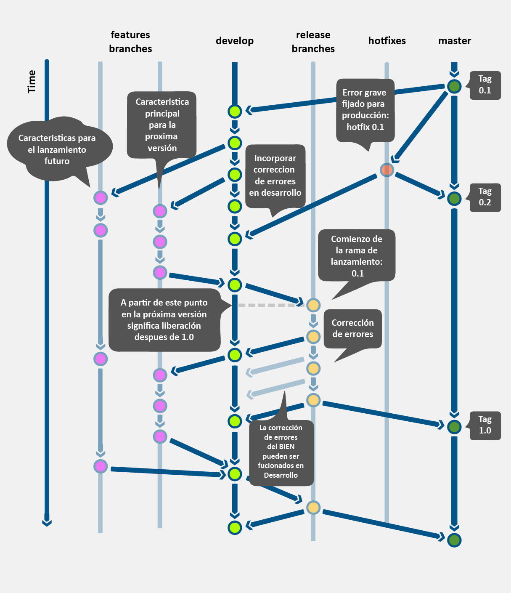
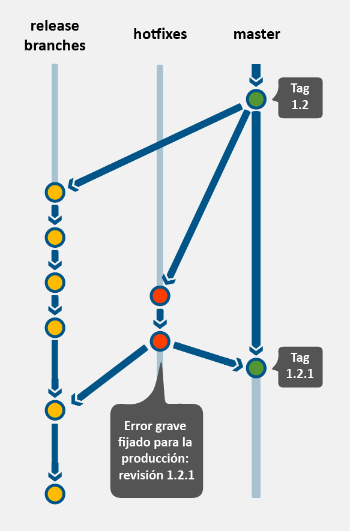

Los lineamietos expuestos aquí son una extensión de A successful Git branching model
Explicar el modelo de desarrollo y control de versión de código de los sistemas desarrollados utiliando la plataforma kukulkan
El modelo de desarrollo explicado aquí puede variar de acuerdo a las necesidades específicas de cada proyecto, sin embargo el modelo general de desarrollo considera diferentes flujos trabajo que pueden adaptarse a las necesidades específicas. El modelo definido aquí aplica sólo para equipos que se encuentren gestionando su código con la herramienta Git.
El flujo de trabajo consta de la definición de los siguientes elementos:
El modelo de desarrollo involucra dos roles; Master y Developer, mismos que se describen a continuación:
Master
Principalmente, este rol será el encargo de llevar a cabo la integración del sistema, además de las siguientes responsabilidades:
Developer
En cada proyecto se puede contar con 1 o más roles de este tipo y sus principales actividades son:
Las actividades que se llevan a cabo en el modelo de desarrollo se ilustran en la siguiente gráfica:

Con la finalidad de comprender de manera precisa el estudio de las diferentes ramas de trabajo utilizados en la DADS, a continuación se presenta la descripción de la meta-información que define a cada una de las ramas y que será utilizado a lo largo de este documento para describirla.
Descripción | Descripción básica de la rama en cuestión. |
Rama de la que bifurca | Nombre de la rama que bifurcó. |
Rama con la que se une | Nombre de la rama a la que se une cuando se ejecuta una operación de tipo merge. |
Convención de nombrado | Convención de nombrado que aplica para la rama. |
Lineamiento | Consideraciones para el buen uso de la Rama. |
Diagrama | Diagrama explicativo sobre el uso de la rama. |
Comandos | Comandos sugeridos para la creación, modificación, unión y eliminación de la rama. |
La rama master, por convención, será la rama principal del proyecto. En esta rama se encuentran las versiones productivas del sistema y que se han liberado a producción.
Ninguna
Ninguna
Esta rama siempre se llama master
push/merge a esta rama.[NO APLICA]
La rama develop, por convención, será la rama secundaria del proyecto. En esta rama, el equipo de desarrollo se encuentra trabajando día con día una nueva versión del sistema.
master
master
Siempre se llamará develop
[NO APLICA]
La rama de características "feature" es utilizada para desarrollar nuevas características o funcionalidades que vendrán en las próximas o futuras entregas. Esta rama se crea cuando se comienza a desarrollar una nueva característica de la cual se desconoce la fecha de entrega. La esencia de esta rama es que exista durante el periodo de tiempo en que tome desarrollar la nueva característica. Eventualmente, esta rama se unirá a la rama de desarrollo develop (para agregar de manera definitiva la nueva característica en la próxima entrega) o se eliminará (en caso de que la nueva característica no cumpla con los objetivos deseados).
develop
develop
El nombrado de esta rama se deberá de apegar a lo establecido en [AGIS] y la propuesta en esta sección:
Nomenclatura Adicional:feature-*
Ejemplo:
Crear una rama feature a partir de la rama develop se deberá de hacer lo siguiente:
git checkout -b feature-seguridad develop
Una vez que se a trabajo en la nueva rama, para actualizar los cambios en la rama develop primero tenemos que regresar a la rama develop y partir de allí llevar a cabo la operación merge:
git checkout develop
Unir las modificaciones hechas en la rama feature dentro de la rama develop:
git merge --no-ff feature-seguridad
A continuación, se deberá de borrar la rama feature-seguridad:
git branch -d feature-seguridad
Finalmente, se envian los cambios a la rama remota develop
git push origin develop
La rama "release" se debe utilizar para la preparación de una nueva entrega en el ambiente de producción. Esta rama es útil para corregir pequeños defectos y preparar los metadatos que deberá llevar la próxima entrega (número de versión, fecha de compilación, etc.). El beneficio de tener una rama de entrega release radica en el hecho de que podemos conservar la rama develop limpia y lista para recibir nuevas versiones que se tendrán que integrar a la rama master. Adicionalmente, la rama release será utilizada por el equipo de QA para probar la entrega antes de que esta llegue a producción.
develop
developmasterEl nombrado de esta rama se deberá de apegar a lo establecido en [AGIS] y la propuesta en esta sección:
Nomenclatura obligatoria: release-*
Ejemplo:
release-seguridadrelease-carrusel
Creación de la rama de entrega release-1.2
git checkout -b release-1.2 develop
Una vez que se a trabajo en la nueva rama, para actualizar los cambios en la rama develop primero tenemos que regresar a la rama develop y partir de allí llevar a cabo una unión (merge):
./bump-version.sh 1.2
Unir las modificaciones hechas en la rama feature dentro de la rama develop:
git commit -a -m "Bumped version number to 1.2"
Cambiarnos a la rama de master:
git checkout master
Unir los cambios de la rama release1.2 con master:
git merge –no-ff release-1.2
Enviar los cambios a la rama develop
git tag –a 1.2
Una vez que se ha llevado a cabo una liberación a la rama master y esta versión forma parte del ambiente productivo del cliente, es posible que exista el reporte de nuevos bugs encontrados por los usuarios finales. Para corregir estos bugs y desplegar una nueva versión en el ambiente productivo, es que se utilizará la rama hotfixe, que ayudará a corregir errores que surgan en el ambiente de producción.
master
masterdevelop
hotfix-[modulo-version]
Ejemplo:
hotfix-seguridad-v1.1.1hotfix-carrusel-v1.1.1hotfixes sólo existe mientras se está corriguiendo errores.hotfixes existe en el repositorio remoto.hotfixes es creada y eliminada por el rol master.master y la ramadevelop sólo la pude llevar a cabo el rol master.Si existe una rama release cuando ocurre un bug en producción, entonces:
hotfix se deberán de unir a la rama release y no a develop; la unión con develop ocurre cuando la rama release está lista para producción. Si el trabajo en la rama develop requiere de manera inmediata el cambio realizado en la rama hotfix, entonces se puede lleva a cabo la operación merge dentro de la rama develop;hotfixLas ramas hotfix son creados desde la rama master. Por ejemplo, si la versión que se liberó a producción fue la 1.2.0, y se detectan errores durante el uso del sistema y los cambios en la rama develop no son estables, entonces se pude crear una rama hotfix para atender los bugs y volver a liberar a producción.
git checkout -b hotfix-1.2.1 master
./bum-version.sh 1.2.1
git commit -a -m "Versión modificada a 1.2.1"
Durante este paso se deberán de corregir los bugs en uno o varios commits:
git commit -m "Resolviendo bugs de producción"
Finalmente, se lleva a cabo un merge tanto a la rama master como a la rama develop,
Operación merge en la rama master:
git checkout master
git merge --no-ff hotfix-1.2.1
Nota Se puden utilizar las opciones-s o -u para firmar nuestro tag.
Operación merge en la rama develop:
git checkout develop
git merge --no-ff hotfix-1.2.1
Nota en caso que exista una rama de release los cambios en la rama hotfix deberán de unirse también en la rama release, en lugar de develop.
Eliminación de la rama temporal:
git branch -d hotfix-1.2.1
En general, siempre hay que considerar los siguientes elementos:
Los siguiente lineamientos aplican a todas la ramas:
Existen dos cosas que nunca se deberá de llevar a cabo en Git: